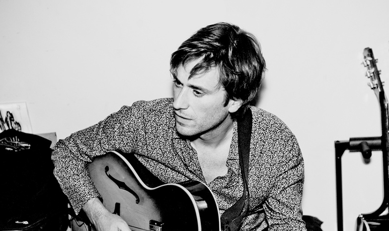

Thomas, chanteur

Wikipedia of M. Dutronc
this is Thomas Dutronc, a french singer.
Thomas Dutronc (born 16 June 1973 in Paris) is a French singer and jazz manouche guitarist. He first wanted to become a photographer, but then had the passion of playing the guitar because of his parents. On 13 February 2008, he received the UNAC award for his song "J'aime plus Paris". It also became the most played French single around the world during 2008.